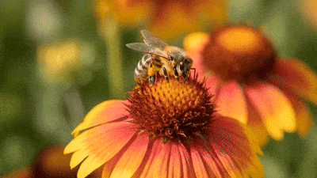

Pollination
Pollination is the process by which plants have pollen transferred from the female part (stigma) of a flower to the male part (anther) of the flower, allowing plants to reproduce. When pollen is transferred from a flower to the same flower or another flower on the same plant, it is called self-pollination and when the pollen is transferred to another plant, it is called cross-pollination.

Plants can be pollinated by many different animals and natural forces. The most common pollinators are insects, such as bees, butterflies, moths, beetles, flies, wasps and ants. Other animals, such as birds, bats, some mammals and lizards, can also pollinate flowers when pollen sticks to their bodies as they move between flowers. Plants can also be pollinated by wind and, in some cases, water. Wind-pollinated plants usually produce large amounts of light pollen that can easily be carried through the air, while water can carry pollen between flowers of some aquatic plants.
Bees are one of the most important pollinators because they visit many different flowers while collecting food. When a bee lands on a flower, pollen from the anthers can stick to the bee's hairy body. As the bee flies to another flower, some of this pollen can rub off onto the stigma. This transfers the pollen and allows fertilisation to occur, eventually leading to the production of seeds.
Honeybees are especially effective pollinators because they visit many flowers during a single foraging trip. They also tend to repeatedly visit the same type of flower, which increases the chance that pollen will be transferred between flowers of the same plant species.